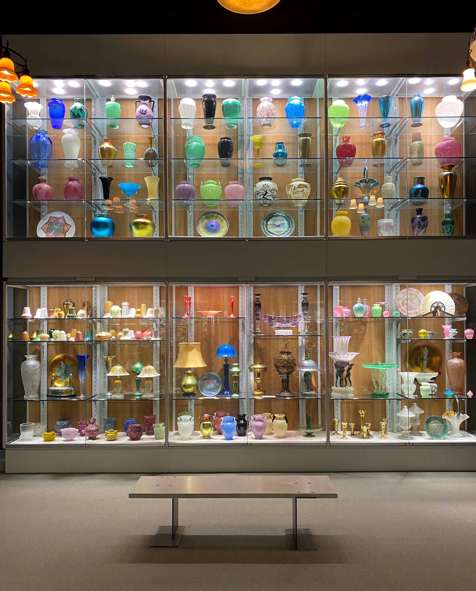
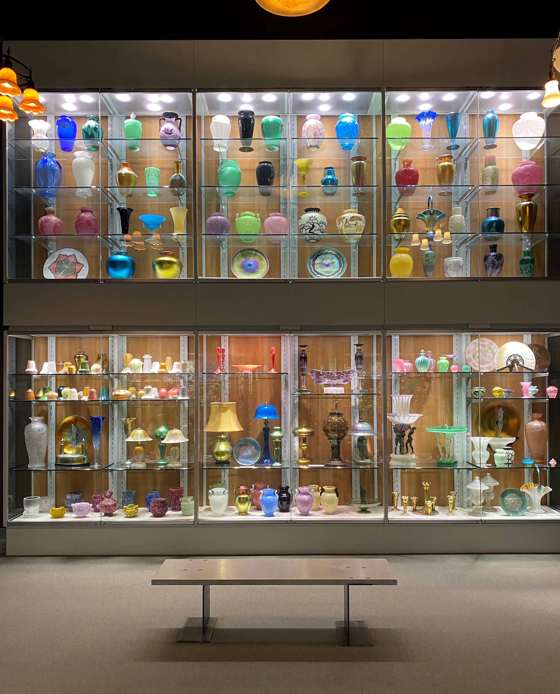

Life
Moments in my daily life.
2021-Jun - Falling Water - Mill Run, PA, US
2021-Jun - Corning Museum of Glass - Corning, NY, US

 


2021-Jun - Niagara Falls - Niagara Falls, NY, US
2021-Apr - Bluebonnet - Brenham, TX, US


2019-Dec - Snow in Houston - Houston, TX, US

2019-Dec - Garner State Park - Concan, TX, US
2020-Dec - Houston Zoo Light - Houston, TX, US


2019-Dec - Chicago - Chicago, IL, US

2019-Dec - MIT - Boston, MA, US

2019-Dec - United Nation - NYC, NY, US

2019-Dec - Grace Farm - New Canaan, CT, US

2019-Dec - DC - Washington DC, US

2019-Oct - Albuquerque International Balloon Fiesta - Albuquerque, NM, US

2019-Oct - White Sands - NM, US

2019-Oct - Guadalupe National Park - Salt Flat, TX, US

2019-Jun - Longmen Grottoes - Henan, China

2019-Jun - Banff Park - Banff, AB, Canada

2018-Dec - Birds - Galveston, TX, US

2017-Dec - Ozark National Forest - Russellville, AR, US

2017-May - Sunrise - Galveston, TX, US

2017-May - Moon - Galveston, TX, US

2016-Dec - Houston Rockets - Houston, TX, US

2016-Dec - NASA - Houston, TX, US

2016-Jul - Fly to Houston - Air

2015-Dec - Shanghai - Shanghai, China
2014-Oct - Wang’s Grand Courtyard - Shanxi, China

2014-Oct - Hanging Temple - Shanxi, China

2014-Oct - Yungang Grottoes - Shanxi, China


2014-Apr - Riding Bicycle - Beijing, China

2014-Apr - Beidaihe - Hebei, China

2014-Feb - Ice Lantern Festival - Beijing, China
2013-Apr - Beijing Olympic Park - Beijing, China

2013-Apr - Tianjin - Tianjin, China